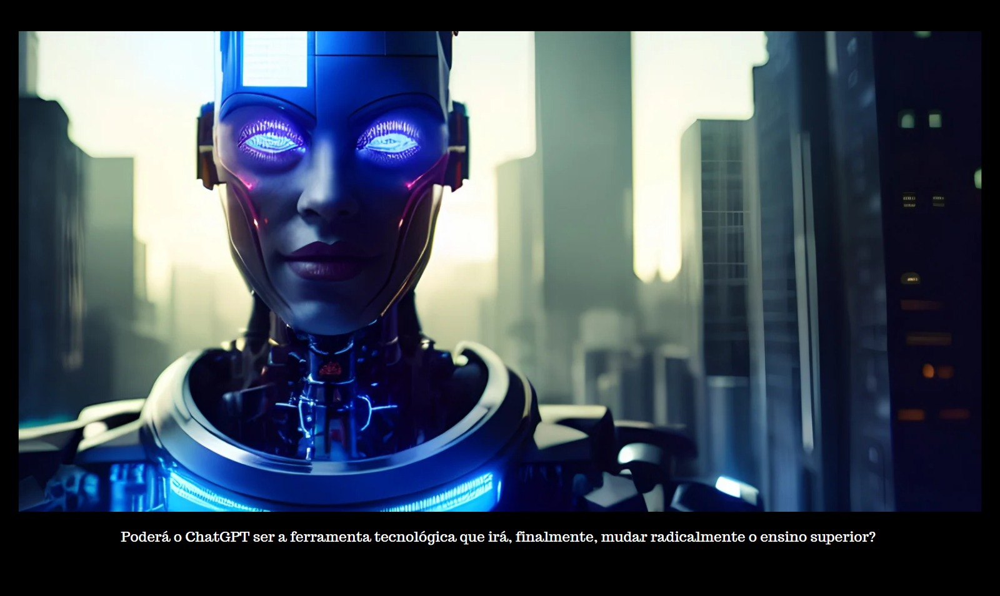

O ChatGPT será o disruptor que as instituições educaionais precisa?
Menos de uma semana após o lançamento do ChatGPT pela Open AI, o CEO Sam Altman anunciou que o chatbot já havia ultrapassado um milhão de usuários . Em 13 de janeiro de 2023, a pesquisa global do Google pela palavra “ChatGPT” atingiu uma pontuação de popularidade de 92 e, desde então, a Microsoft investiu US$ 10 bilhões na OpenAI .
Agora, o chatbot está no limite de sua capacidade e não está mais disponível para uso devido à saturação do servidor, mas a OpenAI anunciou recentemente um serviço de assinatura de US$ 20 por mês que testará com pessoas fora de sua lista de espera.
Como a maioria de nós já sabe, o ChatGPT é uma ferramenta de inteligência artificial baseada em texto capaz de geração de linguagem natural e respostas semelhantes às humanas com um certo nível de precisão. Esta nova ferramenta – e, mais importante, conversas sobre a nova ferramenta – está conquistando o mundo. As opiniões não faltam.
Algumas pessoas estão prontas para adotá-lo totalmente , citando sua alta eficiência na criação de textos como e-mails ou press releases em termos de tempo, dinheiro e recursos. Usar o ChatGPT para gerar uma carta de aceitação (ou rejeição), por exemplo, pode reduzir o tempo que normalmente leva para fazer esse trabalho de 30 minutos para cinco. Isso é espetacular, especialmente para aqueles de nós que consideram essas tarefas demoradas e tediosas. No entanto, outros veem o começo do fim da singularidade e originalidade humana na maneira como a ferramenta usa grandes quantidades de dados comumente existentes.
A desinformação é outra deficiência do ChatGPT porque extrai igualmente de fontes de dados confiáveis e não confiáveis. Ainda por cima, o ChatGPT não consegue citar as referências que utiliza na execução das tarefas solicitadas e por vezes (muitas vezes) até compõe uma resposta completa, ainda que de forma eloquente.
Entusiastas e alarmistas
Essa nova tecnologia tem um impacto direto no ensino superior – e com certeza faz as salas de aula falarem. As opiniões sobre a utilização desta ferramenta no meio académico dividem-se claramente entre entusiastas (particularmente estudantes) e alarmistas (nomeadamente professores).
Os professores temem (com razão) que o uso dessa ferramenta abra portas para trapaças e plágio , enquanto os alunos a veem como a tecnologia há muito esperada que os ajudará a escrever tarefas atrasadas, executar exercícios complexos de codificação e talvez até tirar notas nas provas. Acontece que todo o corpo acadêmico se sente desconfortável, assim como alguns alunos .
Toda essa atividade e debate em torno da entrada (ou não) do ChatGPT na academia mostra que ele está fornecendo uma sacudida que a indústria há muito precisa, e talvez até anseia há muito tempo. Nova tecnologia, velho problema, mesmo debate.
Historicamente falando, a tecnologia sempre afetou a educação de forma significativa e sempre com uma mistura de apoiadores e opositores. Em seu livro, Teaching in a Digital Age, AW Bates escreve que “ os argumentos sobre o papel da tecnologia na educação remontam a pelo menos 2.500 anos. ” A comunicação escrita é uma das maiores ferramentas que tornou o conhecimento mais acessível e permitiu a expansão mundial da educação. Na Europa especificamente, isso coincidiu com a invenção da imprensa no século XV.
Ironicamente, Sócrates, o grande filósofo grego, não era um grande defensor de documentos escritos e não acreditava que a escrita fosse um meio eficaz de comunicar conhecimento. Em meados da década de 1990, a aprendizagem baseada na Internet tornou-se possível devido ao desenvolvimento de sistemas de gerenciamento de aprendizagem baseados na web, outro avanço tecnológico que possibilitou os MOOCs, desafiando o modelo educacional tradicional e provocando debates que ainda existem hoje
Poderá o ChatGPT ser a ferramenta tecnológica que irá, finalmente, mudar radicalmente o ensino superior?
Desafios no ensino superior
Juntamente com o bem-estar dos alunos e a sustentabilidade do campus, a transformação digital é um dos maiores desafios enfrentados pelo ensino superior – e com o ChatGPT, os desafios são ainda maiores.
Sem dúvida, haverá muitos que resistirão ao ChatGPT e a muita pesquisa e investigação gasta em métodos não apenas para detectar seu uso, mas também para impedir sua entrada no ensino superior. Como se a prevenção em sua totalidade fosse possível.
Quer aceitemos quer resistamos ao ChatGPT, não há como negar que esta nova ferramenta expôs, mais uma vez, a fragilidade e vulnerabilidade dos nossos sistemas de ensino superior. O codiretor do Mack Institute, Christian Terwiesch, testou a capacidade do ChatGPT em um curso de gerenciamento de operações do programa de MBA da Wharton e descobriu que a ferramenta tecnológica teria recebido uma nota de B a B no exame. Um resultado bastante inquietante. De acordo com Terwiesch, esse resultado tem inúmeras implicações para a educação em escolas de negócios, incluindo a necessidade de melhorar a criatividade e a produtividade do ensino e de mudar as atuais políticas e currículos de exames.
Mudança de mentalidade
Não é hora, afinal, de revisitarmos nossos currículos, critérios de avaliação e ferramentas de ensino e aprendizagem? Abrir espaço para essa nova tecnologia pode muito bem ser a desculpa de que precisamos, como indica Christian Terwiesch. Se nossos sistemas de avaliação fossem reconsiderados para que não fossem baseados em tarefas intermináveis, testes múltiplos e incontáveis resultados, isso certamente abriria espaço no currículo e criaria tempo na sala de aula (e fora dela) para algo novo.
Mas a questão é: espaço e tempo para quê? Este próximo passo deve ser pensado com cuidado, pois o que temos aqui é uma oportunidade de ouro se usada com sabedoria. Assim, não devemos apenas perguntar o que acontecerá com nossas aulas de codificação e programação se repensarmos nossos sistemas de avaliação graças à entrada do ChatGPT (seja qual for a forma que ele assumir), mas também: o que queremos que aconteça? E os cursos focados em habilidades de escrita e comunicação? Devem ser totalmente removidos de nossos programas educacionais? Só de pensar em tal mudança deixa alguém inquieto.
Este é o tipo de conversa que começou graças ao ChatGPT. Estamos finalmente fazendo as grandes perguntas sobre o ensino superior.
Como aponta Mollick, o ChatGPT pode muito bem ser o prenúncio de uma nova era, de integração homem-máquina. Se for esse o caso, a educação é o ponto de partida lógico – e inevitável.
Então, e se, em vez de proibir o uso do ChatGPT em redações, trabalhos e exames, os alunos pudessem – não, obrigados – a usar a ferramenta digital e, em seguida, passar seu tempo analisando criticamente sua saída, delineando o processo de pensamento e identificando suas forças e fraquezas? E se a verdadeira tarefa não for mais fornecer uma resposta a uma pergunta ou uma solução para um problema, mas analisar como essa resposta é gerada?
Essa mudança de mentalidade em relação às tarefas pode ajudar os alunos a desenvolver seu pensamento crítico e analítico .
Podemos ver o ChatGPT como o golpe final em nossos sistemas educacionais ou como a centelha que mudará a educação para melhor. Acho que tanto os humanos quanto a tecnologia dariam a mesma resposta para essa pergunta